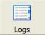

When an application running under the local app server prints data to the log, the log data is captured by the Google App Engine Launcher for later viewing.
To view the log data for a project running under the local app server:
Select the project from the project list.
Click the "Logs" button.

Or: Select the menu option Control > Logs.
Or: Press Control-L.
The log console window opens. You can leave this window open while the application runs to watch log data as it's created.